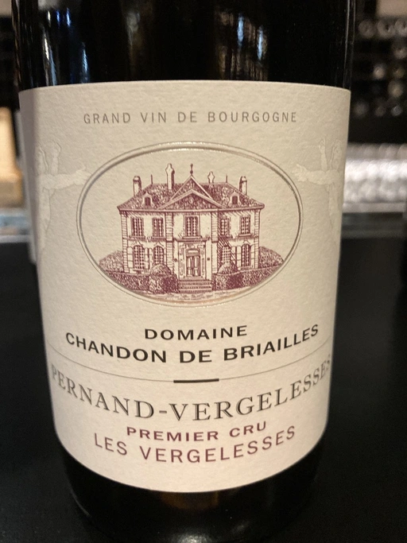

- Type
- Red Still, Dry
- Producer
- Chandon de Briailles
- Vintage
- 2017
- Location
- France, Pernand-Vergelesses AOC
- Grapes
- Pinot Noir
- Alcohol
- 13.5
- Sugar
- 1.1
- Price
- 1550 UAH
- Cellar
- N/A
Producer
Chandon de Briailles is a family owned domaine located in the northern part of Côte de Beaune, spread across Savigny-lès-Beaune, Pernand-Vergelesses and Aloxe-Corton, in total over 13.7 hectares. On average, the domaine produces 50,000 bottles per year, of which 60% are exported.
Domaine is owned by Count and Countess Aymard-Claude de Nicolay and managed by their children - Claude and François de Nicolay. Claude was born in 1967, she went through prolific education of viticulture in Beaune and eonology in Dijon. François was born in 1970 and is primarily a businessman who started wine career in 1996 by undertaking a winemaking course in Oregon. Since 2001 the duo works in winery.
In 2005 they started experimenting with biodynamics.
Ratings
2021-01-25 - 8.50
This is beautiful and ephemeral. Cherry, candy, strawberry, autumn flowers, subtle hints of herbs. Perfectly balanced, evolving. Great tannins, long aftertaste. And boy, how long the aroma stays in the empty glass!